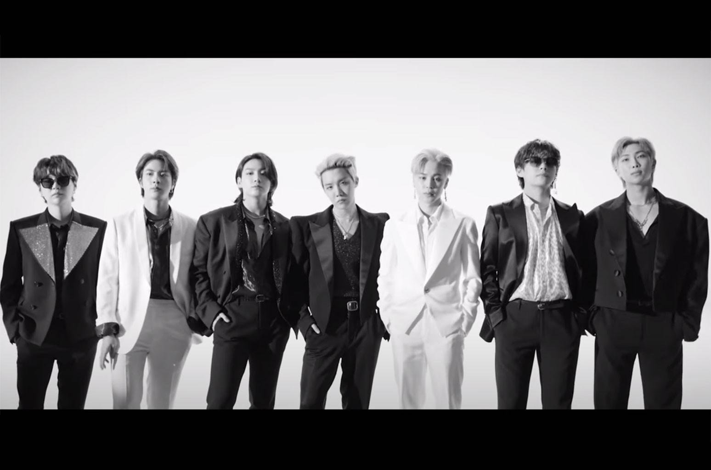

BTS Members: RM, Jin, Suga, J-Hope, Jimin, V, Jungkook
2010–2014: Formation and early years
BTS began its formation in 2010 after Big Hit Entertainment CEO Bang Si-hyuk met with group leader RM and was impressed with his rapping. BTS was originally supposed to be a hip-hop group similar to YG Entertainment's 1TYM, but between their initial formation and their debut, Bang Si-hyuk decided that the contemporary youth needed instead "a hero who can lend them a shoulder to lean on, even without speaking a single word". The group was meant to debut in 2011 and featured on several tracks by artists such as 2AM and Lee Seung-gi before their debut was postponed and the group was reorganized into a more traditional idol group. The lineup was then finalized with Jin, Suga, J-Hope, RM, Jimin, V, and Jungkook in 2012. Six months prior to their debut, they began to gain attention for their presence on various social media websites, as well as song covers on YouTube and SoundCloud.
2014–2015: Moderate success and first concert tour
The last act of their "school trilogy", the EP Skool Luv Affair,[4] was released in January 2014 and topped the Gaon Album Chart, selling 100,000 copies in 2014 and over 250,000 copies overall. It also marked BTS' first appearance on Billboard's World Albums Chart, peaking at number three. The album was supported by the singles "Boy in Luv" (Korean: 상남자; RR: Sang-namja) and "Just One Day" (Korean: 하루만; RR: Haruman), which peaked at number 45 and number 149 in Korea, respectively. While Skool Luv Affair musically retained much of their hip-hop influences with the incorporation of R&B and hard rock, the album coincided with a thematic shift from dreams and happiness to love, focusing on school-age and youthful love.
2015–2016: Mainstream breakthrough and commercial success
Shifting their sound and image from solely aggressive, masculine hip hop to more diverse styles, BTS wanted to express the beauty and anxiousness of "youth" and settled on the title of "花樣年華" (Korean: 화양연화; RR: Hwayangyeonhwa), loosely interpreted to define "youth" as "the most beautiful moment in life." Their third EP, The Most Beautiful Moment in Life, Part 1 (March 2015), explored the growth and emotional agony of youth as well as its playful and uplifting sides.[53] Fuse included it as the only Korean album on their list of the "27 Best Albums of 2015 So Far." The EP has sold over 415,000 copies to date.
2017: International expansion and collaborations
In February 2017, BTS released the repackaged edition of Wings (2016), entitled You Never Walk Alone. Pre-orders of the repackage reached over 700,000 copies, breaking the record for most albums sold in a month. The repackage included an additional four tracks that offered consolation and encouragement to its listeners. Its lead single, "Spring Day" (Korean: 봄날; RR: Bomnal) met critical praise as "an intelligent, compelling and elegantly restrained study of loss and longing" that "deliberately avoids cliché pomp and drama" by Dazed Digital.
2018: Worldwide recognition
In the lead up to their next album, BTS released an original eight-episode documentary series exclusively on YouTube Premium entitled Burn the Stage that ran from March until May 2018, offering a behind-the-scenes look at the group's 2017 Wings Tour.In April, the group also released their third Japanese studio album, Face Yourself, which debuted at number 43 on the Billboard 200 as the third-highest-charting Japanese album in the history of the chart.
2019: Map of the Soul: Persona, stadium world tour and BTS World
In February 2019, BTS attended the 61st Grammy Awards as award presenters. It was their first time attending the event following an appearance by the group at the LA Grammy Museum in 2018.
2020: Map of the Soul: 7, "Dynamite", and Be
In January 2020, BTS released "Black Swan" along with a choreography art film performed by Slovenian-based MN Dance Company as the first single from their fourth Korean-language studio album, Map of the Soul: 7. Album distributor Dreamus reported that stock pre-orders of the album reached a record-breaking 4.02 million, breaking the previous record of 2.68 million held by Map of the Soul: Persona. "Black Swan" debuted at number 57 on the Billboard Hot 100 and number 46 on the UK Official Singles Chart.
2021-present: BTS, the Best and "Butter"
On March 4, 2021, the IFPI named BTS its Global Recording Artist of the Year for 2020—they are the first non-English and Asian act to top the ranking. BTS occupied three spots in the Global Album Sales Chart of 2020 with Map of the Soul: 7 coming at number one, Be (Deluxe Edition) at number two and Map of the Soul: 7 – The Journey at number eight. In the newly launched Global Album All Format Chart, Map of the Soul: 7 claimed the first position while Be (Deluxe Edition) claimed the fourth position. BTS also made their first entry in the Global Digital Single Chart of 2020 with "Dynamite" at number ten. On March 14, BTS performed their song "Dynamite" at the 63rd Annual Grammy Awards, becoming the first Korean nominee to have their own Grammy performance. It was also their third appearance at the Grammys.